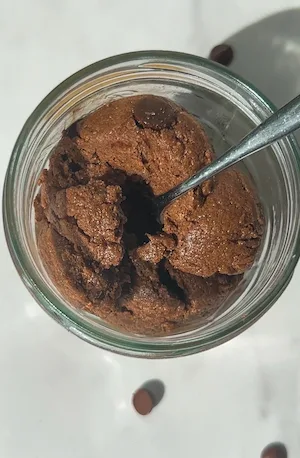

Edible Protein Brownie Batter (just five minutes and one bowl)
the no bake dessert to make when your chocolate craving is screaming but you only have five minutes, one bowl and a few ingredients on hand. this tastes like brownie batter crossed with chocolate cookie dough, the texture is insane. i make this most weeks and it has not gotten old once. it's just super easy to throw together, making it the perfect post dinner sweet treat or something to snack on while watching your fave series.
the great part about this one is the added protein, so you can feel good about indulging in your sweet tooth and hitting your protein goals at the same time. so if your chocolate craving hits at 9pm and you need something immediately, come back to this recipe. there's no oven needed, no waiting, just mix, scoop, press and you're done. and because there are no eggs and the oat flour is perfectly safe to eat raw, you can eat it straight from the bowl before it even makes it to the scoop. not that i've ever done that. obviously.
once set from the freezer, the texture is soft and chewy, somewhere between a chewy brownie and a no bake cookie, and the chocolate flavour is deep enough that it scratches the exact same itch a proper brownie would. the cacao and the chocolate chips are doing different things taste wise: the cacao gives you that raw, slightly bitter chocolate intensity in the batter itself, and the chocolate chips give you little pockets of sweetness and crunch throughout. together they give you the best of both worlds.
whenever i'm (no)baking anything chocolate flavoured, you might have noticed i always use cacao powder and not cocoa powder. there's a reason for that. you can swap cacao for cocoa 1:1, but there's a trade off. cacao powder retains up to 60% more antioxidant compounds and minerals compared to cocoa powder, and the flavour is also much more intense and chocolatey. it does have more of a bitter richness than cocoa, which is why the recipe leaves a range for the maple syrup, so you can add more if you need to counteract that. if you're able to grab a bag of cacao powder, it's worth it for the nutrition and the taste in all of your chocolate bakes.
the cacao range (8 to 10g) is there because some people want a super rich, intense brownie batter taste and some want something a little more subtle. start at 8g, taste the batter before you commit, and add more from there. 8g is roughly one level tablespoon and 10g is about a heaped tablespoon. the chocolate chips go in last so they don't break up during mixing. any refined sugar free dark chocolate works here. i used 70%, but if you want something slightly sweeter 60% is fine, and if you want it more bitter and intense, go darker.
although you can just eat this straight out of the bowl, i prefer to shape it into scoops for self control purposes lol. the easiest and quickest method i've found is using an ice cream scoop. it also makes each bite perfectly portioned and equal. load the mixture into the scoop, press it down firmly so the batter is compact with no air pockets, and release onto a plate. they should come out a clean round shape on top and flatter at the base. if it's crumbling when you release it, either the batter needs a small splash more coconut oil or maple syrup, or you haven't pressed firmly enough. the compression from the scoop is literally what holds the shape together since there's no egg or starch binding things in the usual way, so the pressing step matters more than it might seem.
you can also press the entire batch into a small lined tin and cut into bars, or roll the mixture into balls by hand if that's easier, though i find that the most finicky and time consuming option. the crucial step after, so the bites hold their shape, is to place them in the freezer for 5 to 10 minutes, just until the coconut oil solidifies. this stops the bites from falling apart and improves the texture massively, although it does take some serious willpower to wait.
this is the step that makes the difference between a soft, tender bite and one that's slightly greasy and loses its shape. once chilled, store in an airtight container in the fridge or freezer for meal prep. just pull out a scoop and let it thaw for about five minutes before eating. at room temperature they soften fast, especially in a warm kitchen, so cold storage is the better call either way.
the protein powder you use will make or break this recipe. it's the ingredient that needs the most attention because not all protein powders behave the same way in no bake or baked recipes. i use a chocolate whey protein powder, and whey gives the best texture here because it's not overly absorbent and blends smoothly without making the batter grainy or dry. if you're using a plant based protein powder, it tends to absorb more liquid, which can make the batter crumble rather than hold together. in that case, start with 1.5 tablespoons of coconut oil and add a tablespoon of nut butter if the mixture still feels too dry. the macros listed are specific to the protein powder i used, so if yours has different numbers per serving, the overall values will shift. treat them as a guide rather than gospel.
a little of the nutrition science: cacao is one of the richest plant sources of magnesium and is packed with flavonoids, particularly epicatechin, which has been studied for its effects on brain health, including its role in supporting BDNF (brain-derived neurotrophic factor), a protein involved in the growth and maintenance of brain cells. the oat flour helps stabilise blood sugar after eating, which matters when you're having something sweet as a snack. the protein powder adds a meaningful protein hit that makes these far more satiating than a standard no bake sweet treat, so you're getting something that tastes indulgent and actually works for you.
if you love this, my no bake brownie batter bars are a four ingredient version that went properly viral, and a great sliceable, richer option. my no bake cookie dough protein bars are the natural next make if you're into the protein packed no bake format.
enjoy x
Frequently Asked Questions
Can I use a plant-based protein powder instead of whey?
Yes, any chocolate protein powder works, but plant-based powders tend to absorb more liquid than whey, which can make the batter drier and crumblier. If you're using a plant-based protein, start with 1.5 tablespoons of coconut oil and add more if the batter feels too dry, or add a tablespoon of nut butter to help bring it together. The texture may be slightly different to the whey version but still really good. The macros will also change depending on whichever protein powder you use, so the numbers listed are a guide based on the specific one I used.
What if my batter is too dry or too wet?
Too dry: add nut or seed butter a tablespoon at a time until the batter holds together when pressed. Almond butter, cashew butter or sunflower seed butter all work well and don't overpower the chocolate flavour. A small extra splash of coconut oil also helps. Too wet: add a little extra oat flour or protein powder a teaspoon at a time until the batter is firm enough to scoop cleanly.
Can I shape these differently instead of using an ice cream scoop?
Yes, three options all work well. Press the entire mixture into a small lined tin, flatten the top, freeze, then cut into bars. Roll the mixture into balls by hand, though the batter is quite soft, making this the most difficult option. Or the ideal method: use the ice cream scoop method in the recipe, which is the quickest and gives the cleanest portions. All three get stored and eaten the same way.
What are the macros of this protein brownie batter?
The macros are calculated based on the specific protein powder I used, a chocolate whey protein powder. If you use a different protein powder, the macros per scoop will change, sometimes significantly, depending on the brand and its protein, fat and carb content. Treat the numbers in this recipe as a rough guide and calculate based on your own specific ingredients if accurate macros matter to you.
How do I store these protein brownie batter bites?
The freezer is the best option, especially for meal prep. Store in an airtight container and pull out individual scoops whenever you want one, letting them thaw for about five minutes before eating. They keep in the freezer for up to a month. The fridge also works and keeps them for up to a week. At room temperature they'll soften quickly, particularly in a warm kitchen, because of the coconut oil in the batter, so keeping them cold is the better call.
Is this recipe gluten free?
Yes, oat flour is naturally gluten free. If you have coeliac disease or high sensitivity, use certified gluten free oat flour and check the label on your protein powder and chocolate chips too, as these can sometimes contain traces of gluten depending on the brand.
What chocolate chips should I use?
Any refined sugar free dark chocolate works here. I used 70% dark chocolate chips, but the percentage is up to you. 60% gives a slightly sweeter result, and 85% or above gives a more intense, bitter chocolate hit. Just make sure whatever you use is refined sugar free if you want to keep the recipe consistent. Chopped dark chocolate works just as well as chips if that's what you have.
Can I omit the protein powder?
The protein powder is what makes this a protein brownie batter rather than just a brownie batter, so omitting it will change the recipe significantly. If you do leave it out, replace it with the same weight of oat flour or almond flour to keep the batter at the right consistency. The result will be less protein-dense but still taste great as a no bake chocolate treat.
Pro Tips
- Press the mixture into the ice cream scoop firmly with no air pockets before releasing.
- Put them in the freezer immediately after scooping.
- If the batter feels too dry or crumbly, add nut or seed butter a tablespoon at a time.
- Taste the batter before you commit to the full amount of maple syrup.
Edible Protein Brownie Batter

Ingredients
Instructions
- Step 1: Add the oat flour, protein powder, cacao powder, maple syrup and coconut oil to a bowl or food processor and mix until fully combined into a soft dough.
- Step 2: Taste the batter and adjust the maple syrup or cacao to your preference.
- Step 3: Sprinkle in the chocolate chips and fold through.
- Step 4: Load a standard ice cream scoop with the mixture and press down firmly before releasing onto a lined tray or plate.
- Step 5: Place in the freezer for 10 to 30 minutes until the coconut oil has set and the scoops are firm.
- Step 6: Store in an airtight container in the fridge or freezer.
did you make this recipe?
snap a pic & tag @yourwellnessgirly so i can see! i'd love to hear how it went, share ur thoughts and leave a star rating!
Nutrition Facts
Per one serving:
*Nutritional information is estimated and will vary depending on the ingredients and brands you use. Basic macros don't reflect the full nutritional value including vitamins, minerals, antioxidants, and other beneficial compounds. Please use this as a guideline only.
Reviews
Be the first to leave a review
Leave a review
Thanks for your review! It's now live. 💗
No reviews yet — be the first!